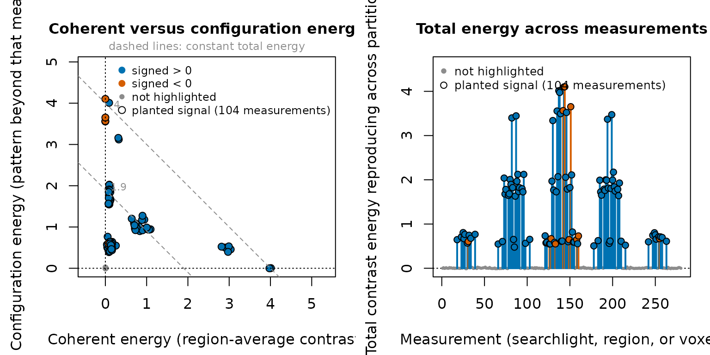
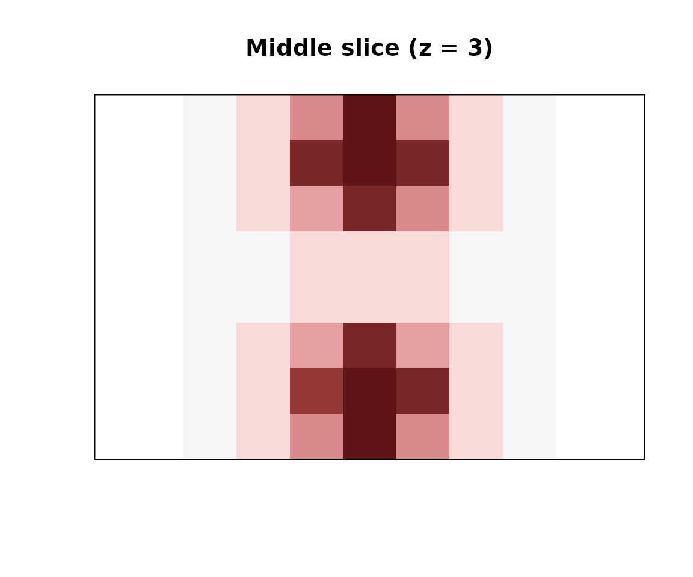
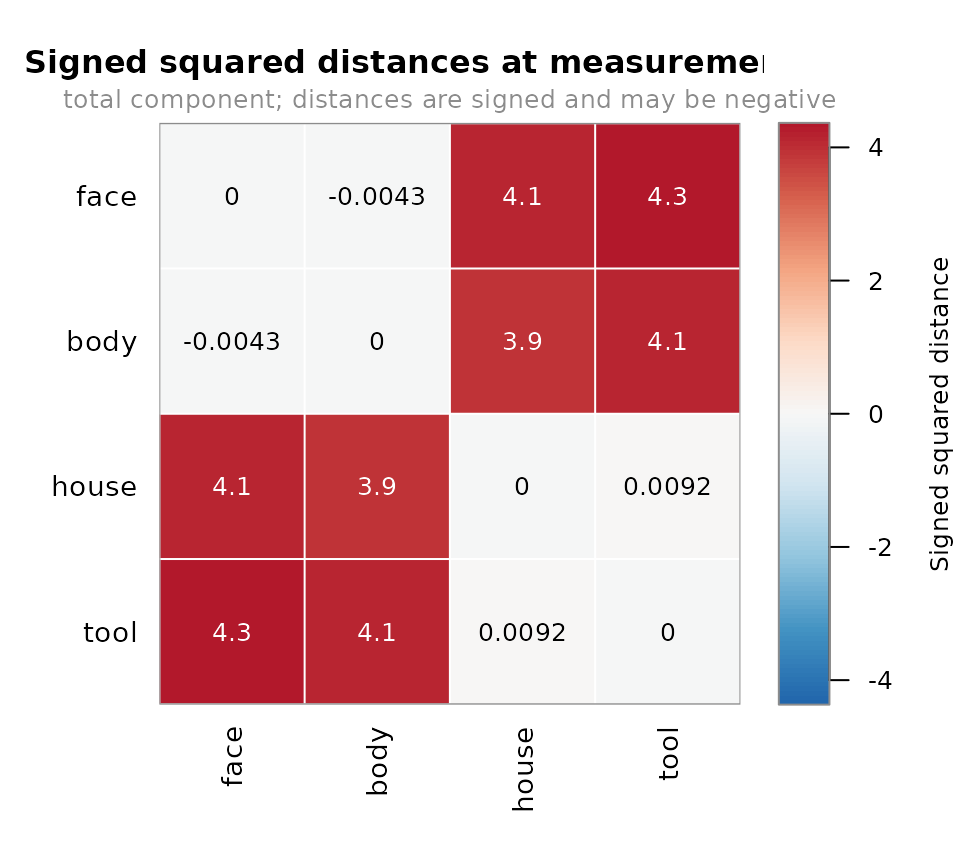
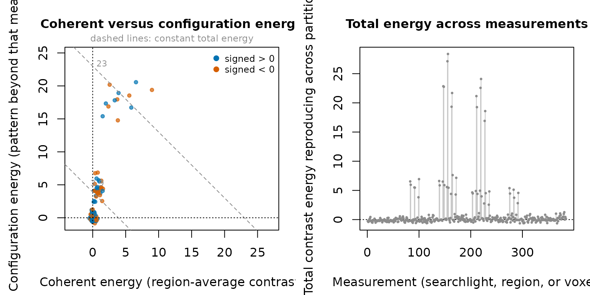

Where does a representational effect generalize?
Source:vignettes/introduction.Rmd
introduction.RmdThe question
You have condition estimates from repeated runs, and you want to know where an effect reproduces across those runs. This guide answers that question, and then three more from the same fit without recomputing anything: what kind of effect it is, what the whole representational geometry looks like at the strongest location, and how much of that you are entitled to put an error bar on.
One word to fix before starting: a measurement is one spatial unit of the frame, and every result below has one value per measurement. Here the measurements are searchlights; anatomical regions, single voxels, and the whole brain are the other choices, and they all behave the same way downstream.
The worked question is: where does an animate-versus-inanimate pattern reproduce across independent runs? The data are generated with known truth, so the example runs after installation and can check its own answer. These generated data are not empirical evidence; the separate Haxby 2001 exemplar is the public-data comparison.
example <- example_fmri_effects()
c(
conditions = length(example$fit$relation$effects),
runs = length(example$fit$relation$partitions),
features = example$fit$relation$n_features,
searchlights = nrow(example$frame$index)
)
#> conditions runs features searchlights
#> 4 4 280 280example$fit contains four run-specific estimates for
four conditions in a small 8 by 7 by 5 volume.
example$frame defines the 280 searchlights at which the
analysis will report results, one centered on each voxel. The generator
returns the frame separately because a fitted relation records the
neural domain but does not own a mutable searchlight definition.
The fit provides two kinds of information:
-
example$fit$relationis the condition-by-feature relation used for point estimates; it reads feature blocks only when a query needs them; - its error channel stores residual blocks, residual degrees of freedom, and effect-coordinate covariance for uncertainty calculations whose assumptions the fit can support.
example$truth records what was planted: two blocks of 19
voxels, at opposite ends of the longest axis, never overlapping, at the
same per-voxel amplitude. They differ only in sign structure. In the
pattern block the sign alternates between neighboring
voxels, so the block’s local average nearly cancels. In the
mean block every voxel moves the same way. Same effect
size, different kind of effect — the section on kinds below
turns entirely on that difference.
c(
pattern_voxels = length(example$truth$planted_features),
mean_voxels = length(example$truth$mean_features),
pattern_searchlights = length(example$truth$pattern_measurements),
mean_searchlights = length(example$truth$mean_measurements),
signal_searchlights = length(example$truth$signal_measurements)
)
#> pattern_voxels mean_voxels pattern_searchlights
#> 19 19 52
#> mean_searchlights signal_searchlights
#> 52 104A searchlight counts as planted if it gives any weight to a planted
voxel, so each 19-voxel block occupies 52 of the 280 searchlights and
the two sets stay disjoint. signal_searchlights is their
union, and it is what the figures below highlight.
Declare what must generalize
Three declarations make the estimand: the relation you fitted, the frame you want answers at, and the pairing that says what must reproduce.
plan <- plan_geometry(
example$fit$relation,
at = example$frame,
over = cross_partitions(
example$fit$relation,
independence = "independent",
generalizes_over = "run"
)
)
plan
#> <effect_geometry_plan>
#> effects: 4 x 4
#> measurements: 280
#> features: 280
#> metric: implicit identity
#> generalizes: 6 partition pairs over run, endpoints independent
#> execution: query-first, in memory
#> state: nothing computed yet
#> next: contrast_energy(plan, weights), rdm(plan), rsa(plan)cross_partitions() requests products between different
runs. Every unordered pair of runs contributes to the estimate, but the
function does not treat the six run pairs as six independent samples.
plan_geometry() checks that the relation, condition names,
searchlight frame, metric, units, and neural domain agree before it
reads neural values.
Read the execution and state lines of that
print. The plan is query-first: it holds the identity of the quantity,
and nothing has been materialized yet. Save plan with the
analysis record. It identifies the estimand: the scientific quantity the
analysis is meant to estimate. Changing block size or storage changes
the execution receipt, not this plan identity, and
print(plan, detail = TRUE) is where those execution
internals are shown.
Choosing what must generalize
Two arguments to cross_partitions() decide what you are
estimating, so it is worth being deliberate about both.
generalizes_over names the sampling axis your partitions
are — "run", "session",
"task". Cross-run and cross-session reproduction are
different scientific quantities even at identical fold counts, so the
declared axis is bound into every plan identity built from this pairing.
If your partitions are sessions, pass "session".
independence = "independent" is your declaration that
distinct partition estimates have independent estimation errors, which
separate runs or sessions with separately estimated noise satisfy. It
has to be stated explicitly: leaving it NULL records the
endpoints as undeclared, which still yields a point estimand but earns
neither cross-generalized nor analytic sampling-law capabilities.
declared <- cross_partitions(
example$fit$relation,
independence = "independent", generalizes_over = "run"
)
undeclared <- cross_partitions(example$fit$relation)
c(
declared = attr(declared, "estimate"),
axis = attr(declared, "generalizes_over"),
undeclared = attr(undeclared, "estimate")
)
#> declared axis undeclared
#> "cross_generalized" "run" "independence_undeclared"The plan print’s generalizes: line is where you check
that you declared what you meant. Left undeclared it reads
6 partition pairs (axis undeclared), endpoints undeclared
instead.
One thing the pairing is not: its six rows are estimator
contributions, not six independent replicates. Pairs that share a run
share that run’s estimation error, which is why the standard-error
section below cannot simply take their spread.
?cross_partitions states this; ?pairing builds
explicit or directed edge sets for designs that need one, such as nested
or ordered axes.
The answer
effect <- contrast_energy(plan, example$contrast)
peak <- which.max(effect$total)
c(
peak_searchlight = peak,
signed_effect = effect$signed[peak],
total_energy = effect$total[peak],
coherent_energy = effect$coherent[peak],
configuration_energy = effect$configuration[peak],
overlaps_planted_signal = peak %in% example$truth$signal_measurements
)
#> peak_searchlight signed_effect total_energy
#> 1.440000e+02 -5.245860e-02 4.102970e+00
#> coherent_energy configuration_energy overlaps_planted_signal
#> -7.331921e-04 4.103703e+00 1.000000e+00contrast_energy() returns four values at every
searchlight. signed is the usual signed contrast of the
local weighted mean. The other three values measure cross-run
reproducibility:
-
coherentis the crossvalidated energy of that local weighted mean; -
configurationis the energy in reproducible spatial departures from the weighted mean; -
totalis their sum.
The peak sits inside the pattern block, and its energy is almost
entirely configuration — its signed contrast is close to
zero. Hold that; it is the subject of the next section.
Because the fixture planted its signal in known searchlights, the
answer can be drawn against the truth. highlight marks both
planted blocks in the picture; it plays no part in the estimate.
plot(
effect,
highlight = example$truth$signal_measurements,
highlight_label = "planted signal"
)
Left: every searchlight in the coherent/configuration plane, with the dashed guides at constant total energy. The two planted blocks separate along the two axes. Right: total energy along the searchlight index. The planted searchlights are filled.
The right panel is the map. The planted searchlights are the spikes;
everything else lies on zero rather than above it. That is deliberate.
Crossvalidated energy is centered on zero when no reproducible effect is
present, so sampling noise produces negative estimates about half the
time. Clipping them to zero would change the estimator and introduce
positive bias, so contrast_energy() retains them and the
plot draws them where they fall.
summarize_region <- function(index) c(
total = mean(effect$total[index]),
coherent = mean(effect$coherent[index]),
configuration = mean(effect$configuration[index]),
fraction_below_zero = mean(effect$total[index] < 0)
)
signal_searchlights <- example$truth$signal_measurements
region_summary <- rbind(
pattern = summarize_region(example$truth$pattern_measurements),
mean = summarize_region(example$truth$mean_measurements),
outside = summarize_region(
setdiff(seq_along(effect$total), signal_searchlights)
)
)
round(region_summary, 3)
#> total coherent configuration fraction_below_zero
#> pattern 1.515 0.103 1.412 0.000
#> mean 1.514 0.812 0.702 0.000
#> outside 0.003 0.001 0.002 0.449The two blocks carry the same total energy to within
0.01 — they were planted at the same amplitude — and divide
it in opposite directions: the pattern block puts more than ten times as
much into configuration as into coherent, the mean block puts more into
coherent than into configuration. Outside them the mean total energy is
0.003 and roughly half the estimates fall below zero. That
is what a correctly centered null looks like, and you can see it rather
than assume it.

Cross-generalized contrast energy in the middle slice, on a scale centered at zero: white is the noise floor, red is reproducible energy. The two generated blocks sit at opposite ends of the long axis, which runs vertically here. The map checks the analysis and is not empirical evidence.
What kind of effect is it?
The left panel of the two-panel figure is the part that is hard to
obtain elsewhere. It places every searchlight by how its reproducible
energy divides: coherent on the horizontal axis is the
energy carried by the searchlight’s frame-weighted mean pattern, which
is the familiar univariate story, and configuration on the
vertical axis is the reproducible pattern beyond that mean.
The two components sum to total exactly at every
measurement, which is why lines of constant total appear as the dashed
guides of slope -1. The partition is checked, not
assumed:
The coherent and configuration modes are orthogonal under the weights declared by the frame. They need not be orthogonal under an unweighted Euclidean inner product.
The two planted blocks make the split concrete, because they are the same effect size and a different kind of effect. Take the strongest searchlight in each:
strongest_in <- function(index) index[[which.max(effect$total[index])]]
pattern_peak <- strongest_in(example$truth$pattern_measurements)
mean_peak <- strongest_in(example$truth$mean_measurements)
readout <- function(measurement) c(
signed = effect$signed[measurement],
coherent = effect$coherent[measurement],
configuration = effect$configuration[measurement],
total = effect$total[measurement]
)
kinds <- rbind(
pattern_block = readout(pattern_peak),
mean_block = readout(mean_peak)
)
round(kinds, 3)
#> signed coherent configuration total
#> pattern_block -0.052 -0.001 4.104 4.103
#> mean_block 2.003 4.011 0.004 4.015Both peaks carry about 4 units of reproducible energy.
The pattern block puts essentially all of it into
configuration; the mean block puts essentially all of it
into coherent. That first row is the signature of a
multivariate pattern a univariate map would miss: the sphere reproduces
a shape, while its average response barely moves. Nothing was
removed to see this, and nothing was fitted twice; the split is a
property of the plan.
“A univariate map would miss it” is checkable here.
signed is a first moment — the ordinary contrast of the
frame-weighted mean pattern, carrying your effect’s units and sign —
while the three energies are second moments, squared and crossvalidated.
signed can therefore only ever see the coherent half — and
at the pattern block there is almost no coherent half to see. Take the
largest signed value anywhere outside the two blocks as the signed noise
level, and ask how far each block stands above it:
outside <- setdiff(seq_along(effect$total), signal_searchlights)
pattern <- example$truth$pattern_measurements
largest_signed_outside <- max(abs(effect$signed[outside]))
largest_total_outside <- max(effect$total[outside])
clearing <- function(index) {
sum(abs(effect$signed[index]) >= largest_signed_outside)
}
comparison <- c(
signed_noise_level = largest_signed_outside,
mean_block_clearing_it = clearing(example$truth$mean_measurements),
pattern_block_clearing_it = clearing(pattern),
pattern_signed_over_noise =
stats::median(abs(effect$signed[pattern])) / largest_signed_outside,
pattern_energy_over_noise =
stats::median(effect$total[pattern]) / largest_total_outside,
signed_at_the_energy_peak = abs(effect$signed[peak]),
total_at_the_energy_peak = effect$total[peak],
largest_total_outside = largest_total_outside
)
round(comparison, 3)
#> signed_noise_level mean_block_clearing_it pattern_block_clearing_it
#> 0.154 52.000 48.000
#> pattern_signed_over_noise pattern_energy_over_noise signed_at_the_energy_peak
#> 2.089 55.120 0.052
#> total_at_the_energy_peak largest_total_outside
#> 4.103 0.030Every one of the 52 mean-block searchlights clears that level: the
first moment sees that block perfectly well. The pattern block is a
different story. Its alternating signs do not cancel exactly, so most of
its searchlights clear the level too — but only by about twice the noise
level, where their energies clear it by more than fifty times. And the
single strongest searchlight in the whole volume, the one you would
actually report, has a signed contrast of 0.052,
smaller than the 0.154 noise level. A signed map
ranks the best result in the volume below pure noise, while its total
energy of 4.10 stands against a largest-elsewhere total of
0.03. The energies see both blocks; the first moment sees
only one of them clearly.
contrast_energy() also reports
coherence_fraction, the share of reproducible energy
carried by the local mean, but only where the components form a
nonnegative partition. Elsewhere it is NA, because a ratio
whose denominator can be negative is not a share of anything; printing a
contrast view repeats that caveat under the table. The interpreting-results
article (vignette("interpreting-results")) covers how to
read that fraction and the three ways it can mislead you.
Change the question without refitting
The plan is unchanged, and nothing about it is recompiled below. For
conditions i and j, rdm() applies
the fixed contrast c = e_i - e_j to the geometry:
distances <- rdm(plan)
round(distances$values[peak, ], 3)
#> face - body face - house face - tool body - house body - tool house - tool
#> -0.004 4.078 4.334 3.881 4.124 0.009
plot(distances, measurement = peak)
Signed squared distances among the four conditions at the strongest searchlight. Distances are signed and may be negative; the color scale is centered on zero.
Nothing asked for that block structure. The two animate conditions sit close together, the two inanimate conditions sit close together, and every animate-versus-inanimate pair is far apart. It is what the geometry contains, read out of the same numbers that produced the contrast map.
With the current identity metric and cross-run pairing, these are signed, crossvalidated squared Euclidean distances. Supplying a fixed neural precision metric changes them to squared Mahalanobis distances. Either estimate can be negative near the null because the two factors come from different runs.
Linear RSA compiles the RDM transform and regression coefficient into a fixed query against the same plan:
category_fit <- rsa(
plan,
models = list(category = example$model_rdm)
)
round(category_fit$coefficients[peak, ], 3)
#> (Intercept) category
#> 0.002 4.102rsa() aligns the model’s named rows and columns to the
relation conditions. It rejects a model with missing names or a
rank-deficient regression design before it reads geometry rows.
If you only want some pairs, ask for them. The rest is never materialized:
Uncertainty, and what the package refuses to fake
The six run pairs share run estimates and are not six independent sampling units. Their empirical spread divided by the square root of six is not a standard error.
example_fmri_effects() used
lm_relation_fit(), so the fit retains the residual error
channel required by the package’s fixed-metric covariance model:
distance_covariance <- rdm_sampling_covariance(
plan,
example$fit,
target = "plugin",
at = peak
)
distance_se <- sqrt(sampling_covariance(distance_covariance))
round(distance_se, 3)
#> face - body face - house face - tool body - house body - tool house - tool
#> 0.021 0.238 0.249 0.232 0.243 0.027target is required because the two available choices
answer different variance questions, and the package will not pick one
for you.
-
target = "null"evaluates the signal-dependent variance term under a fixed zero-effect null. It is exact there, so prefer it whenever the standard error is referenced to a test of no effect. -
target = "plugin", used above, substitutes the partition mean of the estimates for the unknown signal. That substitution biases the signal term upward, by an amount that shrinks like one over the squared number of partitions and is largest when noise dominates the true distances. Use it when reporting uncertainty around an estimated nonzero distance, and read it as mildly conservative.
?rdm_sampling_covariance states the bias term
exactly.
The result is a within-searchlight covariance under an
equal-partition, fixed-metric, separable error model. It is not a
cross-location random-field model, a confidence interval, or group
inference. The object stores a factorized covariance operator.
sampling_covariance() can read its diagonal, selected
entries, matrix action, quadratic form, or fixed linear transport
without constructing the full distance-by-distance matrix.
Now the part worth knowing before you need it. Those standard errors are available because this fit kept residuals. Build the same plan from beta matrices alone and the request is refused, by name:
conditions <- c("face", "body", "house", "tool")
betas_only_domain <- abstract_domain(40L, id = "betas-only:v1")
betas_only_runs <- lapply(seq_len(4), function(run) matrix(
rnorm(4 * 40), nrow = 4, dimnames = list(conditions, NULL)
))
names(betas_only_runs) <- paste0("run", seq_len(4))
betas_only <- relation(
betas_only_runs,
effects = effect_space(conditions),
domain = betas_only_domain
)
betas_only_plan <- plan_geometry(
betas_only,
compile_frame(whole_brain(), betas_only_domain),
cross_partitions(
betas_only, independence = "independent", generalizes_over = "run"
)
)
catch_refusal(
rdm_sampling_covariance(betas_only_plan, betas_only, target = "null", at = 1L)
)
#> <effect_capability_refusal>
#> capability: sampling_covariance
#> namespace: evidence_sampling
#> reasons:
#> - missing_error_channel
#> remedies:
#> - Refit raw observations with `lm_relation_fit()`.
#> state: refused; no partial result was producedThat is a value, not a message: catch_refusal() hands
back the unmet requirement and its remedy so a script can branch on
them. The point estimates are unaffected —
contrast_energy(), rdm(), and
rsa() all work on betas_only_plan. What is
withheld is the one quantity the inputs cannot support.
sampling_capabilities(plan, fit) answers the same admission
question before you provoke it.
Use your own data
example_fmri_effects() handed you a fitted relation;
yours has to be built. Every route ends at a plan you can pass to
contrast_energy(), rdm(), and
rsa(). They differ only in what you start from, and
therefore in whether the analytic standard errors above remain
admitted.
The route below is the common one: beta matrices in a volume, which
is also the starting point that makes searchlights available. It runs as
written; the generated inputs stand in for yours. Two other starting
points — raw scan-by-feature responses with an already-compiled design,
which keeps the residual channel, and beta matrices over a bare list of
feature columns, which does not — are worked in
vignette("from-observations").
From beta matrices in a volume
If independent runs already contain condition-by-voxel estimates, build a point relation directly. It needs a named list of matrices with one row per condition, a named effect space, and a neural domain. Give that domain a mask and voxel spacing and searchlights become available. Nothing downstream changes: the same relation, pairing, and views apply, and the result simply has one row per searchlight.
So that there is something to find, twelve voxels below carry the
same face-minus-house pattern in every run, alternating in sign so that
the regional mean stays near zero — the fixture’s pattern block trick,
done by hand. Delete volume_planted,
volume_pattern, and the two lines that add them to
b when you substitute your own betas.
set.seed(20260816)
condition_names <- c("face", "body", "house", "tool")
mask <- array(TRUE, c(8L, 8L, 6L))
mask_domain <- volume_domain(mask, spacing = c(3, 3, 3))
volume_frame <- compile_frame(searchlights(radius = 4), mask_domain)
volume_planted <- array(FALSE, dim(mask))
volume_planted[3:4, 3:5, 3:4] <- TRUE
volume_pattern <- rep(c(3, -3), length.out = sum(volume_planted))
# Substitute your own: one condition-by-voxel matrix per run, rows named.
volume_runs <- lapply(seq_len(4), function(run) {
b <- matrix(
rnorm(length(condition_names) * sum(mask)),
nrow = length(condition_names),
dimnames = list(condition_names, NULL)
)
b["face", volume_planted[mask]] <-
b["face", volume_planted[mask]] + volume_pattern
b["house", volume_planted[mask]] <-
b["house", volume_planted[mask]] - volume_pattern
b
})
names(volume_runs) <- paste0("run", seq_len(4))
volume_relation <- relation(
volume_runs,
effects = effect_space(condition_names, units = "percent-signal"),
domain = mask_domain
)
volume_plan <- plan_geometry(
volume_relation,
volume_frame,
cross_partitions(
volume_relation,
independence = "independent", generalizes_over = "run"
)
)
volume_effect <- contrast_energy(
volume_plan, c(face = 1, house = -1, body = 0, tool = 0)
)
dim(rdm(volume_plan)$values)
#> [1] 384 6The same picture works here, and this time nothing was told where to look.
plot(volume_effect)
The planted pattern on generated ‘own’ data. No highlight was supplied: the candidates are simply the measurements standing clear of the band at zero.
Whether that is the right answer is checkable, because we planted it. The searchlights that give any weight to a planted voxel are the ones that should have won:
touching <- which(
Matrix::rowSums(volume_frame$weights[, volume_planted[mask], drop = FALSE]) > 0
)
ranked <- order(volume_effect$total, decreasing = TRUE)
c(
searchlights = nrow(volume_frame$index),
touching_signal = length(touching),
top_energies_touching = sum(ranked[seq_along(touching)] %in% touching),
peak_energy = max(volume_effect$total),
largest_elsewhere = max(volume_effect$total[-touching]),
fraction_below_zero_elsewhere = mean(volume_effect$total[-touching] < 0)
)
#> searchlights touching_signal
#> 384.0000000 44.0000000
#> top_energies_touching peak_energy
#> 44.0000000 28.3732100
#> largest_elsewhere fraction_below_zero_elsewhere
#> 1.2653372 0.5441176The largest energies in the map are exactly the searchlights that touch the planted voxels, every one of them is configuration-dominated, and about half of the rest fall below zero.
This relation is enough for contrast_energy(),
rdm(), and rsa(). It cannot supply the
analytic standard errors shown above, for the reason the refusal gave:
beta matrices contain no residuals and no residual degrees of freedom.
Keeping them means starting further back, which is what
vignette("from-observations") covers.
Reading a map without ground truth
Your own data will not come with volume_planted, and the
figure still works. highlight is optional, as the plot
above shows. Read it in two steps.
- The right panel gives you candidates. The band around zero is the noise floor: crossvalidated energy is centered there when nothing reproduces, which is why roughly half of it falls below the line. Candidates are the measurements standing clear of that band.
- The left panel gives you their kind. High on the vertical axis is a reproducible pattern; far along the horizontal axis is a regional mean that a univariate analysis would also have found.
What the figure does not give you is a threshold or a p-value.
crossform performs no spatial and no group inference, and
it will not invent a null distribution over measurements for you. A
within-measurement standard error is available, but only from a fit that
kept residuals, which the beta matrices above did not. Reading
a map without ground truth
(vignette("interpreting-results")) works through what a
candidate is and is not, including why an error bar taken at
which.max() is not an error bar.
The other starting points
Everything above began with betas, which is why the standard errors
were refused. If you still have the scan-by-feature responses — or you
want the first-level model declared rather than hidden in an analysis
script — continue with
vignette("from-observations", package = "crossform"). That
guide binds scan times, events, confounds, named effects, and an
observation model before it fits the relation, and
plan_relation() there accepts either a semantic
design_model() or the version-checked
fmridesign_design_model() adapter. It also works the short
version of the same journey: lm_relation_fit() straight
from an already-compiled design matrix, which keeps the error channel
and readmits the analytic standard errors, and relation()
straight from beta matrices over a plain list of feature columns, which
does not.
For neuroim2 volumes,
neuroim2_volume_domain() and
neuroim2_searchlights() replace
volume_domain() and searchlights() while
preserving stable full-volume indices, and as_neurovol()
maps compact results back to a volume without interpolation or
smoothing.
Crossform records the requested effects, design identity, fit receipt, and supported uncertainty operations. It does not perform preprocessing, registration, masking, or general hemodynamic response modeling.
Why correlation distance is not an option to rdm()
Feature centering is a fixed linear projection, so a plan can declare it as a metric. Pearson correlation also divides each observed pattern by its norm. That denominator depends on the data and is therefore not a fixed linear query. A conventional correlation distance can be defined from a positive-semidefinite self geometry. Applying the same diagonal normalization to a signed cross-generalized form does not automatically define a valid crossvalidated estimator.
The package therefore does not hide correlation normalization inside
rdm(). The accepted extension requirements and refusal
cases are recorded in the correlation-distance
policy (vignette("correlation-distance-policy")).
What you just did that you could not before
-
You asked four questions of one fit. The contrast
map, the RDM, the RSA coefficient, and the single-pair query all read
the same compiled plan, so they agree by construction rather than by
care. The novelty
ledger (
vignette("novelty")) states what that architecture does and does not yet demonstrate. -
You learned what kind of effect you had found. The
exact, non-destructive split into regional-mean and
pattern-beyond-the-mean energy came free with the contrast, and
separated two blocks of equal effect size into a pattern and a regional
mean. Reading
the results (
vignette("interpreting-results")) covers the traps. - You saw the null. Negative crossvalidated estimates were kept, so the noise floor sat on zero in the figure instead of being clipped into a positive-looking band.
-
You were told what could not be estimated, and why.
The refusal named the missing error channel and the remedy. The failure
gallery (
vignette("failure-gallery")) collects six such guards, this one among them.
Where to go next
-
?plan_geometrydescribes rectangular cross-axis plans (right =), read with axis-boundpair_query()s, and?couplingtakes the adjoint neural-side closure from the same plan vocabulary. -
vignette("evidence-pairing")covers measurement forms and coupling views, including one bounded cross-domain contraction and the Parseval reconstruction law. -
?rdm_sampling_covariancestates the admitted analytic covariance contract, and?sampling_capabilitiesanswers the admission question before it is provoked. - The Haxby 2001 exemplar supplies public-data parity and refusal evidence.
-
Coming
from rMVPA (
vignette("from-rmvpa")) maps the familiar objects onto this vocabulary.
For the usual workflow, construct one plan from the fitted relation,
spatial frame, and cross-run pairing. Then pass that plan to
contrast_energy(), rdm(), or
rsa() according to the result you need.